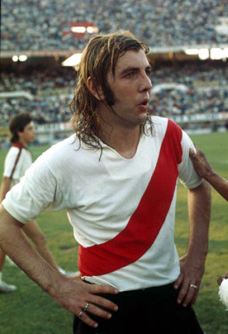
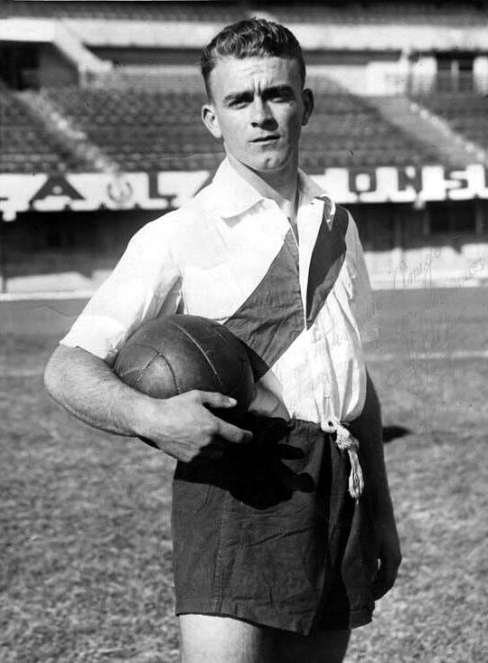

Museo de River Plate
Angel Amadeo Labruna. Con 317 goles es el maximo goleador de la historia de River Plate
Reinaldo Carlos "Mostaza" Merlo. Jugó en River entre 1969-1983, con 563 partidos es el jugador que mas partidos jugo para River en toda su historia.
Leopoldo Bard. Primer presidente y primer capitan en la historia del mas grande
Alfredo Di Stéfano. Jugó en River entre 1946-1949 donde jugó 75 partidos marcando 55 goles. Para luego emigrar a Colombia, y posteriormente ganar 2 balones de oro.
Fundado el 9 de noviembre de 2009, el Museo River alberga los más preciados tesoros de la historia del Club Atlético River Plate.
En sus 122 años, el Club ha vivido momentos gloriosos tanto en lo deportivo como en lo institucional. Ya sea en lo futbolístico como en el plano societario, el Museo refleja cada una de esas etapas de maneras diversas.
Sin dudas, River Plate es el club más grande de la Argentina y su reconocimiento es mundial. Aquellos ídolos, objetos y lugares se encuentran en el corazón del Estadio Monumental.
El Museo River abarca más de 3500 metros cuadrados de superficie. Sus ambientes reflejan distintas áreas temáticas que dividen el recorrido, referenciadas en fechas emblemáticas para la historia de River. Con un despliegue tecnológico sin precedentes en el país, el Museo cuenta con un cine en 360 en el cual se proyecta una película que expresa el sentimiento del hincha riverplatense.
A través del Túnel del Tiempo, los turistas podrán conocer cronológicamente las personalidades centrales de River Plate, los equipos que hicieron grande al Club, las mejores goleadas, los triunfos destacados y los más valiosos trofeos, todo ello relacionado a la historia nacional e internacional.
Además, quienes recorran este espacio rememorarán los orígenes del Club, los primeros pasos en el profesionalismo, los partidos destacados y la gloria que siempre acompañó a River Plate. Estas secciones cuentan con espectáculos audiovisuales que invocan el contexto de cada era de River.
El Museo River pretende ser un reservorio de la historia y el patrimonio del Club, posible de ser disfrutado por el público en general interesado en River Plate y en el fútbol mismo como expresión de la cultura popular.